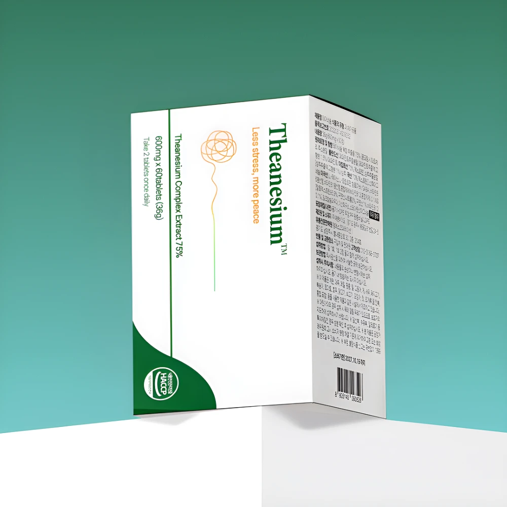

복합 원료 배합
판매처는 L-테아닌과 마그네슘에 GABA, 트립토판을 함께 담은 구성을 안내합니다.
올데이 클리닉 · 테아네슘 자율활성보조 프리미엄

판매처에서 안내하는 배합 구성과 제공된 패키지의 표시 내용을 소개합니다.
판매처는 L-테아닌과 마그네슘에 GABA, 트립토판을 함께 담은 구성을 안내합니다.
제공된 패키지 기준 하루 한 번 두 정으로 안내되어 있어 섭취 방식을 확인하기 쉽습니다.
판매처 기준 HPMC, CMC-Ca, 합성향료, 착색료, 감미료를 넣지 않았다고 안내합니다.
패키지의 ‘복합 추출물 75%’는 각각의 원료가 75%라는 뜻이 아닙니다. 개별 성분의 정확한 함량은 제품 표시와 판매처에 확인하세요. 무첨가 표시 역시 모든 사람에게 부작용이 없거나 더 높은 효과가 있다는 의미는 아닙니다.
제품의 최신 가격과 구성, 배송 및 교환 조건은 올데이 클리닉에서 확인하세요. 본 안내는 특정 질환에 대한 치료 효과를 보장하지 않습니다.
올데이 클리닉 제품 보기 ↗